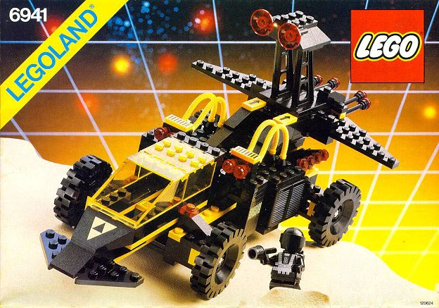
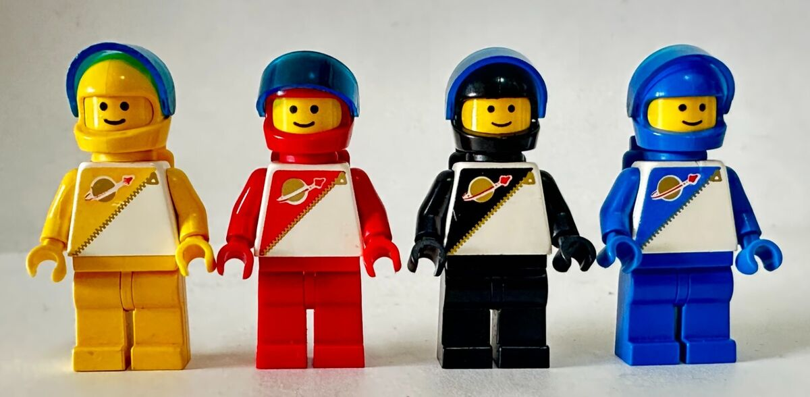
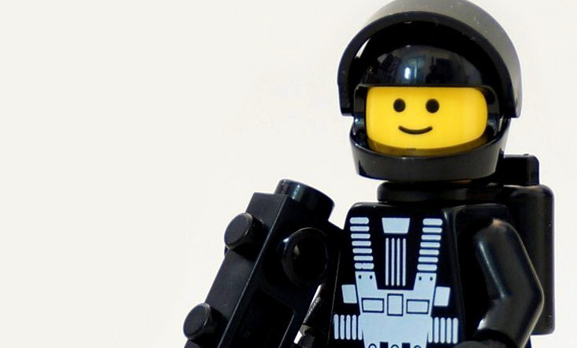
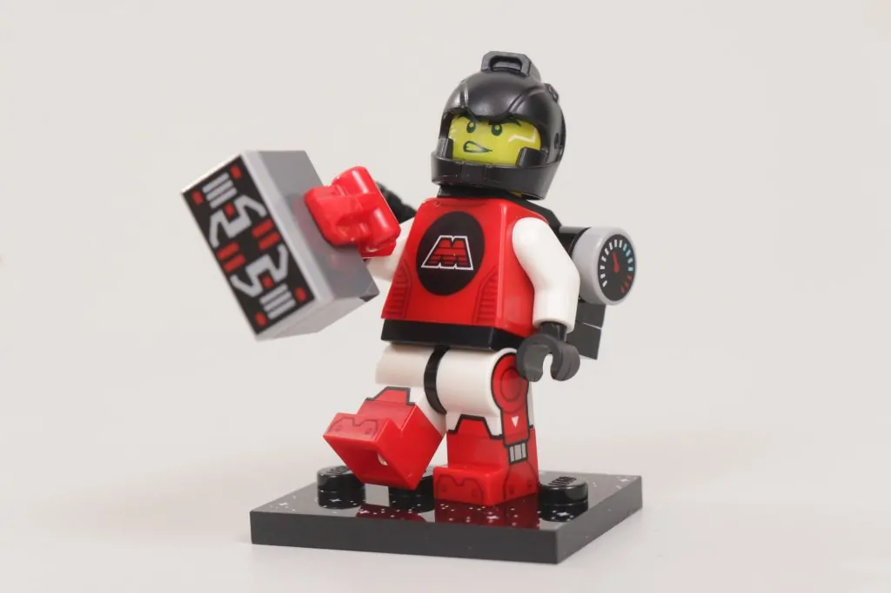
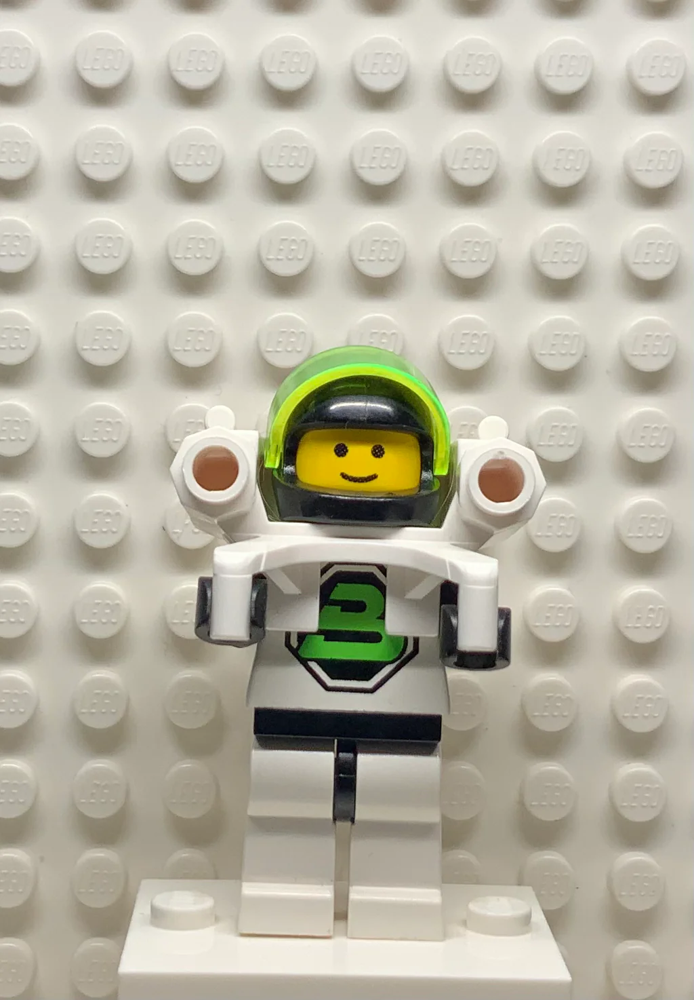
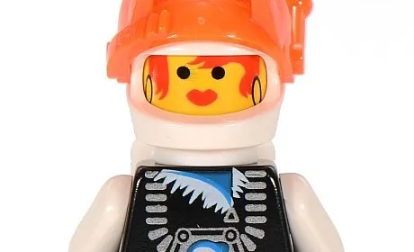

The Galaxy Awaits
Long ago, when the first explorers set foot beyond the stars, a universe of adventure began to take shape. Across the cosmic frontier, daring pioneers, cunning outlaws, and mysterious forces all carved their place among the stars. These are their stories.

Classic Astronauts
The First Explorers
They were the original dreamers, blue-suited astronauts charting the unknown with curiosity and a few trusty bricks.
The Classic Astronauts were the pioneers of LEGO Space, charting uncharted galaxies with nothing but curiosity and a few trusty bricks. Their missions ranged from establishing moon bases to exploring asteroid belts, always with teamwork and ingenuity. Their ships were simple but clever, featuring translucent yellow cockpits and modular builds that encouraged creativity. Many builders fondly remember the “planet swoosh” logo, a symbol of adventure and discovery.

Futuron
Keepers of the Future
Futuron united technology and harmony, building sleek domes and monorails across the galaxy with a focus on teamwork and progress.
Futuron astronauts took exploration to the next level, uniting high-tech innovations with a spirit of harmony. Their bases included shiny domes, monorail systems, and futuristic vehicles that seemed plucked straight from a sci-fi vision. These explorers believed in teamwork above all, often coordinating large-scale missions across planets and space stations. Futuron sets introduced new helmets with transparent visors and modular designs, inspiring builders to think bigger about how pieces fit together.

Blacktron
Masters of the Shadows
Pilots in stealthy black-and-yellow ships who took what they wanted and vanished without a trace. Rebels of the galaxy.
Blacktron crews thrived in the galaxy’s shadows, stealing resources, sabotaging rivals, and disappearing before anyone could catch them. Their sleek black-and-yellow ships were designed for speed and stealth, full of detachable modules and secret compartments. Some say Blacktron pilots were rebels; others called them pioneers of freedom in a galaxy of order. Fun fact: the modular design of their vehicles inspired a generation of builders to mix, match, and create hybrid ships, giving players the power to imagine their own missions.

M:Tron
The Magnetic Miners
M:Tron extracted rare minerals from distant planets with red-and-black ships and magnetic cargo pods, fueling future space adventures.
M:Tron brought industry and ingenuity to the stars. Their red-and-black ships were equipped with magnetic cargo pods, cranes, and transporters, making mineral extraction an interstellar science. Explorers in this faction didn’t just mine for resources; they experimented with magnetic principles, teaching builders about problem-solving and mechanics through play. Many M:Tron sets featured daring missions on rocky planets, moving luxurious ores across tricky terrain.

Blacktron Future Generation
Return of the Rogues
Sleek suits, neon ships, and high-tech gadgets. These renegades carried on the spirit of rebellion across the galaxy.
Blacktron II redefined space rebellion with sleek black-and-white suits, neon accents, and high-tech gadgets that made their ships look like they were plucked from a sci-fi movie. These renegades were smarter, faster, and bolder than their predecessors, blending stealth with cutting-edge tech. Their missions often involved espionage, sabotage, and outsmarting rival factions, giving LEGO builders the thrill of plotting secret operations.

Ice Planet
Scientists of the Frozen Frontier
Braving icy worlds with chainsaws and rocket skis, this crew uncovered the galaxy’s secrets in frozen isolation.
The Ice Planet team braved frozen worlds where temperatures could stop most explorers in their tracks. Equipped with chainsaws, rocket skis, and high-tech tools, these scientists investigated icy landscapes, collected samples, and discovered hidden alien secrets. Their bright orange suits ensured they stood out against the snowy expanses, while their sleds, rovers, and modular bases were built for survival and experimentation.